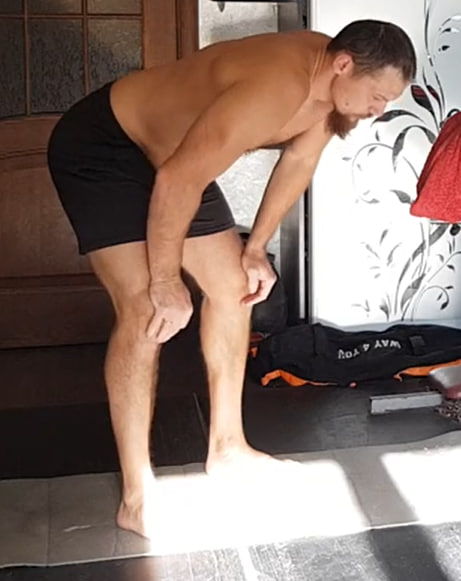
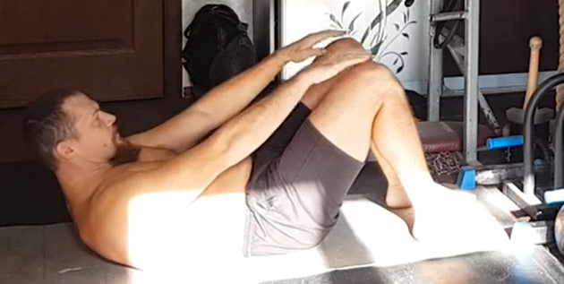
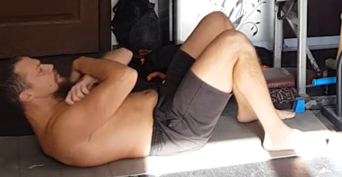
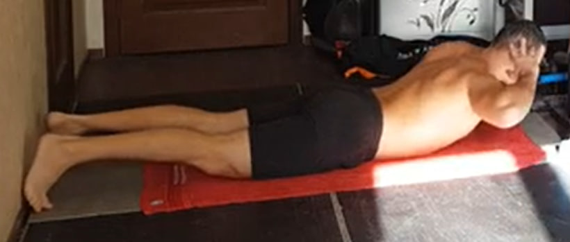
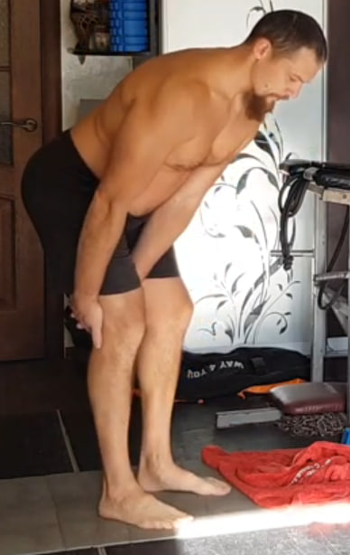
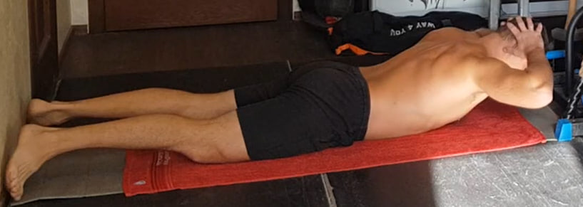
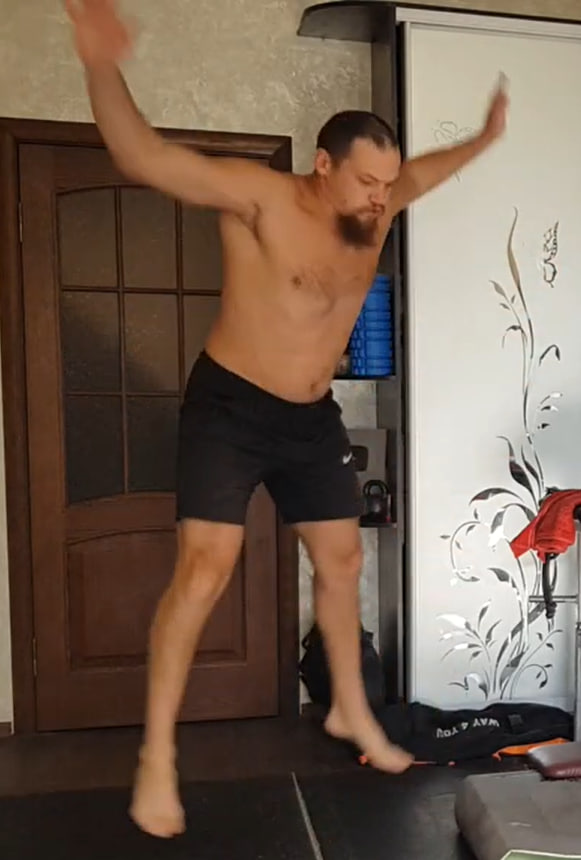

1. Elevación parcial del abdomen — 20 repeticiones

Acuéstate boca arriba con las rodillas flexionadas y los pies apoyados. Lleva las manos hacia las rodillas y eleva el torso sin incorporarte por completo, solo lo necesario para acercarte/tocar las rodillas con las manos. El movimiento es corto, controlado y sin impulsos.
Exhala al subir apretando el abdomen y baja despacio manteniendo el core activo (sin relajar del todo la tensión).
Ejecución: 20 repeticiones.
2. Uddiyana Bandha (versión rápida) — 10 repeticiones
De pie, inclina el torso un poco hacia adelante y apoya las manos por encima de las rodillas. Exhala todo el aire y quédate en apnea con pulmones vacíos.
Sin tomar aire, mete el abdomen hacia dentro y hacia arriba (vacío) y luego suéltalo hacia afuera, alternando “meter/soltar” varias veces dentro de la misma retención. Luego inhala suave y descansa.
Ejecución: 10 repeticiones (cada apnea = 1).
3. Elevación parcial del abdomen — 2×15 (o 1×30)

Misma técnica del ejercicio 1. Movimiento corto, controlado y sin impulsos. Exhala al subir y baja despacio manteniendo el core activo.
Ejecución: 2×15 o 1×30.
4. Uddiyana Bandha (versión rápida) — 10 repeticiones

Repite el ejercicio 2 con la misma técnica.
Ejecución: 10 repeticiones (cada apnea = 1).
5. Elevación parcial del abdomen — 3×10 (o 1×30)

Misma técnica del ejercicio 1. Movimiento corto y controlado. Exhala al subir y baja despacio manteniendo el core activo.
Ejecución: 3×10 o 1×30.
6. Uddiyana Bandha (versión rápida) — 10 repeticiones

Repite el ejercicio 2 con la misma técnica.
Ejecución: 10 repeticiones (cada apnea = 1).
7. Elevación parcial del abdomen — 40 (2×20 o 1×40)
Misma técnica del ejercicio 1. Movimiento corto y controlado. Exhala al subir y baja despacio manteniendo el core activo.
Ejecución: 40 repeticiones (2×20 o 1×40).
8. Uddiyana Bandha (versión rápida) — 10 repeticiones

Repite el ejercicio 2 con la misma técnica.
Ejecución: 10 repeticiones (cada apnea = 1).
9. Elevación parcial del abdomen — hasta el agotamiento
Acuéstate boca arriba con las rodillas flexionadas y los pies apoyados. Haz la variante con los brazos cruzados sobre el pecho (o manos hacia las rodillas si prefieres). Eleva el torso sin incorporarte por completo, con recorrido corto y controlado.
Exhala al subir y baja despacio sin relajarte del todo entre repeticiones.
Ejecución: 1 serie hasta el agotamiento.
10. Uddiyana Bandha (versión rápida) — 10 repeticiones

Repite el ejercicio 2 con la misma técnica.
Ejecución: 10 repeticiones (cada apnea = 1).
11. Hiperextensión isométrica — 10 repeticiones (10 s)
Acuéstate boca abajo. Manos detrás de la cabeza sin tirar del cuello. Piernas estiradas y activas. Eleva simultáneamente el pecho y las piernas creando una contracción fuerte de la zona lumbar, glúteos y cadena posterior.
Mantén arriba 10 segundos, baja con control y repite.
Ejecución: 10 repeticiones (10 s cada una).
12. Peso muerto isométrico “bloqueado” — 15 por pierna (10 s)
Ponte de pie e inclina el torso hacia adelante como en un peso muerto, con la espalda firme y recta y el abdomen activo. Apoya las manos sobre los muslos (por encima de las rodillas) para bloquear el movimiento.
Intenta levantarte como si hicieras un peso muerto real, pero las manos impiden que el torso suba: se crea una tensión fuerte en la zona lumbar, glúteos y cadena posterior.
Mantén 10 segundos, suelta y repite. Ejecución: 15 repeticiones por cada pierna.
13. Hiperextensión dinámica — al agotamiento
Acuéstate boca abajo. Manos detrás de la cabeza sin tirar del cuello. Eleva el torso de forma dinámica y continua, subiendo y bajando con control, sin quedarte colgado arriba. Evita “romper” la zona lumbar.
Variación (opcional): solo torso (más suave) o torso + piernas (más intenso).
Ejecución: 1 serie al agotamiento.
14. Saltos estrella — al agotamiento
De pie, pies juntos y brazos abajo. Salta abriendo las piernas hacia los lados y elevando los brazos por encima de la cabeza. Vuelve con otro salto a la posición inicial (pies juntos, brazos abajo).
Aterriza suave, con las rodillas ligeramente flexionadas, torso estable y sin dejar que las rodillas se metan hacia dentro.
Ejecución: 1 serie al agotamiento.